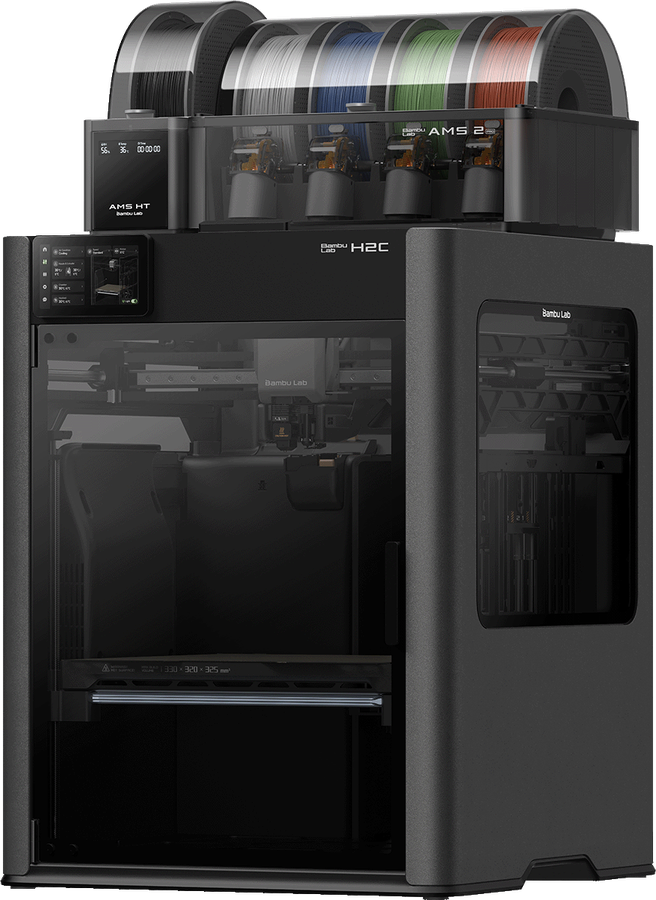

Bambu Lab H2C
The Bambu Lab H2C is the ultimate evolution of multicolour FDM 3D printing. Able to print up to 24 colours and materials at once, it opens up new creative and technical possibilities for professionals and demanding makers.

Technical sheet
| Vortek system | up to 7 nozzles |
|---|
Compatible materials

PLA
Precise · Economical · Multi-colour
View the sheet →
PETG
Strong · Durable · Chemical-resistant
View the sheet →
ABS
Hard · Machinable · Heat-resistant
View the sheet →
ASA
UV-resistant · Outdoor · Durable
View the sheet →
TPU
Flexible · Elastic · Abrasion-resistant
View the sheet →
PP
Lightweight · Flexible · Chemical-resistant
View the sheet →
PA12-CF
Rigid · Lightweight · Technical
View the sheet →
PA12-GF
Stable · Robust · Industrial
View the sheet →
PPS-CF
High temperature · Chemical-resistant · Rigid
View the sheet →


The whole FDM ecosystem
Detailed descriptionEverything to know: click to expand
FDM
The Bambu Lab H2C is the ultimate evolution of multicolour FDM 3D printing. Able to print up to 24 colours and materials at once, it opens up new creative and technical possibilities for professionals and demanding makers.
Designed for multi-material assemblies and complex projects, the H2C combines Bambu Lab's printing precision with exceptional material flexibility. PLA, PETG, ABS, TPU, PA: every material can be combined in the same part, in the same print.
O&D Impression 3D uses the Bambu Lab H2C for creative projects, multicolour prototypes and complex assembly parts. Contact us to discuss your project.
COMPATIBLE MATERIALS
- PLA / PLA+: easy to use, clean results
- PETG: strong, semi-flexible
- ABS / ASA: high heat and UV resistance
- TPU: flexible and elastic
- PA (Nylon): high mechanical strength
- Soluble support (PVA / HIPS): for complex structures
USE CASES: WHO IS IT FOR?
The Bambu Lab H2C is the high-end multi-material FDM 3D printer in Bambu Lab's H series, unveiled at Formnext in November 2025. Its big innovation is the Vortek system: instead of purging filament at every colour change, the machine changes nozzle.
Each colour or material has its own nozzle. The H2C handles up to seven nozzles: an automatic rack stores them and the toolhead swaps them in a few seconds, thanks to induction heating that brings a nozzle to temperature in about 8 seconds. The result: far less purge waste and faster multicolour prints.
The build volume reaches 330 × 320 × 325 mm in total (305 × 320 × 325 mm with a single nozzle, 300 × 320 × 325 mm with two nozzles). Nozzles reach 350 °C and the chamber is heated up to 65 °C, so engineering materials such as ABS, ASA, PC, polyamides and PPS can be printed.
Calibration is fully automatic: offset between nozzles, build plate check before each print and verification of the installed nozzle. The chamber interior is made of flame-retardant material.
Combined with the AMS automatic feed systems, the H2C can combine up to 24 colours on a single part, or pair different materials: a rigid and a flexible area, or a soluble support for complex shapes.
Our workshop has five Bambu Lab H2C printers. We use them for multicolour parts, multi-material prototypes and small batches where the colour has to come straight out of the machine, with no painting.
A part to make?
Send your 3D file or describe what you need: instant quote with a file, custom quote within 24 h.